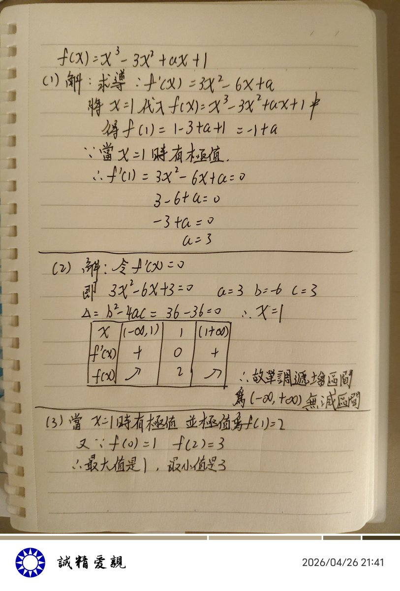

文芸🍁空白子🫧
@bungeikuhakushi
@feieyuhuo

文芸🍁空白子🫧
@bungeikuhakushi
還好空白子上數學課的時候還是有一段時間認真聽的 ... https://t.co/1Xypf6hqAN https://t.co/CEBmH5VD6H
飞蛾浴火
@feieyuhuo
@bungeikuhakushi 设函数f(x)=x³-3x²+ax+1
(1) 若函数在x=1处取得极值，求实数a的值；
(2) 在 (1) 的条件下，讨论函数f(x)的单调区间；
(3) 在 (1) 的条件下，求函数f(x)在［0，2］区间上的最值。